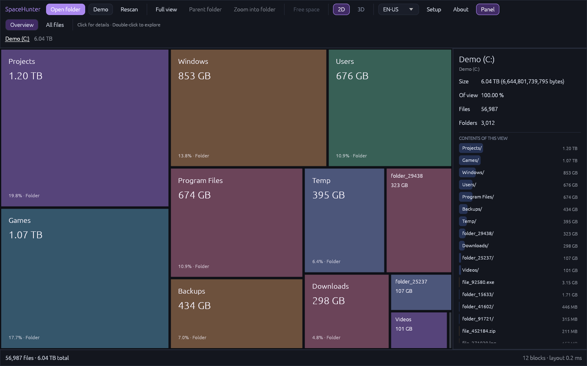

Veja o todo
Cada arquivo vira um bloco proporcional ao seu tamanho. Alterne entre a precisão do mapa 2D e a perspectiva da vista 3D.
QUISEN / FERRAMENTAS PARA O DIA A DIA
Encontre o que está ocupando espaço. Explore suas pastas em mapas 2D e 3D e descubra os arquivos que merecem sua atenção. Tudo no seu dispositivo.
GRÁTIS · SEM CONTA · SEM ENVIO DE ARQUIVOS


Arquivos maiores, blocos maiores. Uma visão clara do que ocupa seu disco.
Cada arquivo vira um bloco proporcional ao seu tamanho. Alterne entre a precisão do mapa 2D e a perspectiva da vista 3D.
Entre nas pastas com um clique duplo, volte pelo caminho e encontre os maiores arquivos no painel lateral.
Análise local, sem conta e sem upload. A versão web funciona offline depois do primeiro acesso.
01 / PARA DISCOS INTEIROS
Aplicativo portátil para Windows 10/11, 64 bits. Análise paralela, tamanho real em disco e acesso ao gerenciador de arquivos. Sem instalador.
Baixar para Windows ↗02 / DIRETO NO NAVEGADOR
Escolha uma pasta, arraste para o app ou experimente com dados de exemplo. Instalável e disponível offline após o primeiro acesso.
Abrir no navegador ↗Não. A análise acontece no seu dispositivo. O Space Hunter não envia arquivos nem nomes de arquivos para um servidor.
O navegador restringe o acesso a raízes de discos e pastas do sistema. Escolha uma subpasta, como Downloads, ou use o aplicativo nativo para analisar o disco inteiro.
O aplicativo ainda não tem assinatura de código. Confira o código e a origem do download no GitHub antes de decidir executar.
Você pode usar a versão web. A versão nativa também pode ser compilada pelo código-fonte disponível no GitHub.